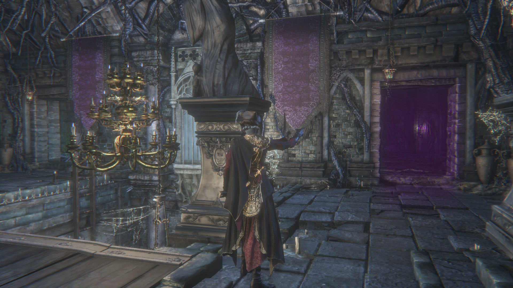
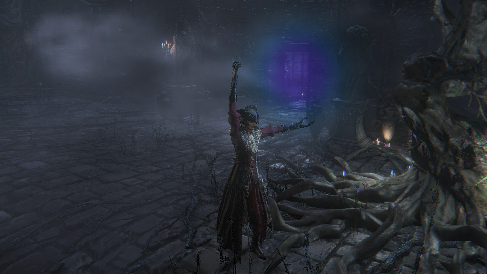
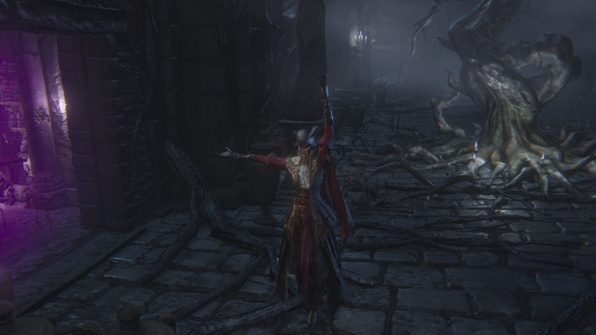

Lower Pthumeru Chalice |
||||
|---|---|---|---|---|
|
||||
Lower Pthumeru Chalice is a Chalice Item in Bloodborne. You can create this chalice dungeon by combining the materials listed below at one of the Tomb Altars in Hunter's Dream. This dungeon never changes Bosses, design, or loot.
Lower Pthumeru Chalice Information
- Depth: 3
- Area: Pthumeru
- Glyph: jjph
- Materials:
- Ritual Blood (3) x9
- Blood Echoes x3200
- Haze Extractor (Depth 2, Sideroom after you open the gates to bossroom)
Location
- Dropped by last boss of Central Pthumeru Chalice Dungeon
Bosses
Merciless Watcher (Layer 1)
- Drops: Tempering Blood Gemstone (3), Fool's Blood Gemstone
Undead Giant, Club/Chain/Sickle version (Layer 2)
- Drops: Adept Blood Gemstone (3)
Rom, the Vacuous Spider (Layer 3)
- Drops: Lower Pthumeru Root Chalice
Bloodletting Beast (Layer 4)
- Drops: Defiled Chalice (also known as the Cursed and Defiled Chalice)
Notes
- This is the first of the Pthumeru Chalices to have a fourth level.
- Each level has a hidden wall but their locations varies.
- There is a hidden wall in Layer 1's first off-shoot leading to a chest with a Sage's Wrist. -
 neomerdien-
neomerdien- - There is a hidden wall in Layer 2 that leads to a treasure room. - neomerdien-
- There is a hidden wall in Layer 3 that leads to a treasure room. - neomerdien-
- A bath messenger is found on Layer 4 behind a hidden wall. It is through the door left of the lamp, up the ladder and in the room with the tree, hounds, spiders and Keeper of the old Lords on the right wall. It will look different than the rest of the room and an ambient "whooshing" indicates its presence. Beware of a spider in the hallway revealed behind the hidden wall. The bath sells the Sinister Lower Pthumeru Root Chalice as well as uncanny and lost versions of the DLC weapons you have discovered.
 
 - If the player dies to Rom at the same time that Rom is killed Layer 4 will be unavailable to the player. (confirmed) *possibly patched? Just happened to me, and I was able to continue to Layer 4 with no problem.
- After completing this dungeon Ritual Blood (2) and Tomb Mold (2) can be bought from the Messengers in Hunter's Dream
Trivia
Trivia goes here
Solid offline place to farm tempering gems. Layer 2's lever fatty is easy to get to and drops 20%+ cursed radials. Attainable much earlier than tier 5-6 Lantern gems, and much less frustrating.

- Anonymous
Unreachable item in layer 4 anyone ever found this?? It's on a second level and even has a YouTube video showing people looking for hours and yes I have found illusion wall but this one is different I've hit EVERY wall in the area multiple times
- Anonymous
Lets design this boss with aoe's and loads of enemies surrounding them and put them in a fittingly large and open area with no distractions,
now lets put it in a cramped room with pillars and corners everywhere
Miyazaki you've done it again
- Anonymous
I need help killing rom on the 3rd layer so I can get to the 4th layer
- Anonymous
I haven’t killed mergo’s wet nurse yet there was a fourth layer
Why did this happen?
- Anonymous
- Anonymous
You will only have 3 layers if you haven't killed Mergo's Wet Nurse. The door to the 4th layer will appear after it is dead.
- Anonymous
- Anonymous
Ugh, why is Rom here. That fight is a boring and infuriating slog. I'd rather drink a glass of vinegar than be reminded of that*****ty boss.
- Anonymous
4 bad bosses in a row... they really don't like us getting good upgrade gems
- Anonymous
If you have trouble with bloodletting beast just call 1 or 2 old hunter they will distract the beast so much that you won't even take much dmg and kill it easily
- Anonymous
Layer One is an excellent place to farm souls once you're somewhere around Levels 75-90, I always run through the side path on the right at the very beginning (getting somewhere between 3500-5000 Blood Echoes), then I go past the yellow lamps to the main part of the first layer. Run through this as quickly as possible (Go Up ladder and straight to the left. Kill that guy for like 1555 souls, then kill the CHime Maiden and the tall undead guy at the bottom of the final room where the boss switch is). I run through the entire Layer 1 area in maybe 2-3 minutes, and it nets me about 12k-13k souls, especially if I get extra blood echoes from using the run that boosts Visceral Attacks. This is a good place to level up or farm souls to stock up on items. It can be a bit tricky at times because of the damn spiders that the Chime Maiden conjures, but once you get a rhythm going, it's very rewarding. I've leveled up considerably doing this
- Anonymous
- Anonymous
I found the bath messenger, some reason he's not selling ANY weapons? I have all the regular ones pre-dlc...
- Anonymous
- Anonymous
The first time I went through here, I completely missed the 4th layer, and assumed that Rom was the last boss. It took me way too long to realize that there was a 4th.
- Anonymous
How do actually get this chalice because I try to look it up but no one talks about where it is.
- Anonymous
Sure would be nice to have actual directions to these illusory walls that weren't so fucking vague and images that weren't busted. But hey, the half-assed, sloppy, lazy writing and complete lack of any fact checking on this wiki is just par for the fucking course around here.
- Anonymous
None of the image links work. They should be updated or removed.
- Anonymous
Is anyone able to lend a hand for Rom on layer 3? I can summon Prospector Olek, but he focuses ads instead of Rom.
- Anonymous
What weapons are there for the lost/uncanny versions in layer 4 because it has nothing for me.
- Anonymous
Do I have to do this whole damn dungeon again because layer 4 won’t appear??? I didn’t even know there was a 4th one until I started looking for more ritual blood.
- Anonymous
I have finished this freaking dungeon 9 fckin times, but no Defiled Chalice so far! Just wtf? Anyone know whats happening? I have Cursed and Defiled Root Chalice and Sinister Lower Pthumeru Root Chalice... I think my account is bugged or somethg,
- Anonymous
- Anonymous
Layer 3 didn't have Rom, only Keeper of the Old Lords and the room to layer 4 won't appear
- Anonymous
Content of a treasure room behind hidden wall in Layer 3: Sage's Wrist x2, QS Bullets x4, Ritual Blood (4)
- Anonymous
I have found Workshop Haze Extractor in this dungeon. Layer 2
- Anonymous
Content of a treasure room behind hidden wall in Layer 2: Tomb Mould + 4 creatures to kill with Tempering Gems
- Anonymous
I managed to defeat Rom in the Lower Pthumeru Chalice with a combination of Lake runes for arcane defense, some blood gems for fire damage, and a combination of oil urn, flamethrower and molotovs
Is this not a guaranteed drop from the Pthumerian Descendant in the Central Pthumeru Chalice dungeon? I had to fight this guy multiple times before the thing dropped.
- Anonymous
I went through the hidden wall in layer 4 but only found a chest instead of messenger's. Is there a requirement to make them appear or something? or is this a bug?
- Anonymous
If the player dies to Rom at the same time that Rom is killed Layer 4 will be unavailable to the player. Oh thx From now i can do the *****ty dungeon again.
- Anonymous
- Anonymous
vidoe guide http://goo.gl/sVkkN5 i was level 77 when i killed the giant. My tips are given in the description. My main one is to avoid the spot on his back as it actually makes him attack more agressive.
- Anonymous
Need help on Layer two giant boss and layer three for Rom afterwards. Please help! Leave PSN so I can message. I'm level 62
- Anonymous
To get to the layer 1 wall start from the very first lamp in the chamber of the seal and walk down the hallway until you find a door on your right and go up the ladder and kill the spider. Then go down the ladder in the next room and kill the kidnapper and you should be in a room with a chandelier and two guys with fire weapons above you. The wall straight ahead should be the fake wall. The fake walls don't have any vines or rune signs on them and so far are wide so you don't have to worry about the smaller walls.
- Anonymous
Need help with Rom, lvl 89, PSN is Xuss2302, would be nice if someone is able to help :)
- Anonymous
- Anonymous
I ran into a strange enemy in layer 2. It looked just like blood starved beast and it came from the room with the unlock lever. Just wondering if this is something that always happens, or a glitch or what? I only ask because he came out of a room that was all clear of enemies a minute earlier, and also because I can't find any mention of it on here anywhere.
Not sure if this was confirmed untrue or not, but it happened to me and I was still able to progress.
- Anonymous
Too many spiders, I always die in phase 3. Level: 104 PSN: PieBaracus14
- Anonymous
- Anonymous
- Anonymous
Please help me with ROM, I'm stuck my PSN is pallas_mi and thw glyph is 5c8h5y8u
- Anonymous
Can anyone help me with this dungeon? I'm stuck on undead giant and I'd probably need help on rom and if it matters I'm level 81.
- Anonymous
somehow i have the cursed and defiled chalice but i dont have the defiled chalice. Has anyone had this problem before.
- Anonymous
i cant get the defiles chalice i killed the boss twice and it didnt drop WTF
- Anonymous
I beat the bloodletting beast but the cursed chalice, how do I get the defiled chalice?
- Anonymous
Patch 1.09 - If the player dies at the same time as ROM layer 4 is still accessible. Confirmed this just now. I got the loot upon death - and the fog gate was gone when I got back.
- Anonymous
How do you get to the 4th level? I'm trying to get the defiled chalice
- Anonymous
- Anonymous
guyz i need help plz i killed BloodLetting beast 2 times in Lower Pthumeru Chalice and he didnt drop the Defiled Chalice why?? can someone explain??
- Anonymous
I can't even get past the first room I just get destroyed every time.
- Anonymous
I've killed the Bloodletting beast 10-20 times and still haven't received the Defiled Chalice drop. Is this a bug or is it just a random drop? Anyone else experiencing the problem?
- Anonymous
I'm trying to get to the blades of mercy and the burial blade in the pthumeru ihyll root chalice, and I'm only level 50. I haven't even beaten Vicar Amelea yet with this character. Would anyone mind taking me as far as possible? I'm in layer three of lower pthumeru trying to fight Rhom right now, and the glyph is bcyfkp4m
Fml i just killed rom but didn’t see the door to the final layer.... removed challace... was stuck on rom for ages.... farrrrrrrrk
3
+10
-1